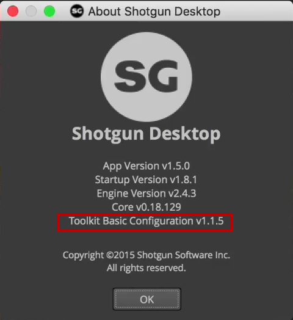
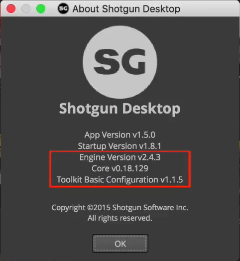
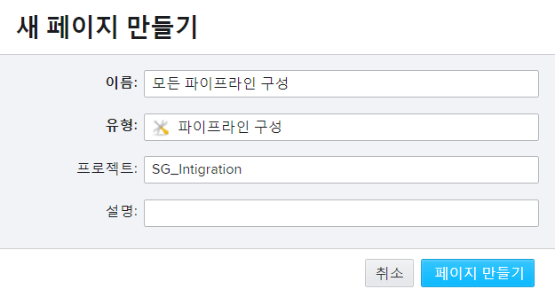
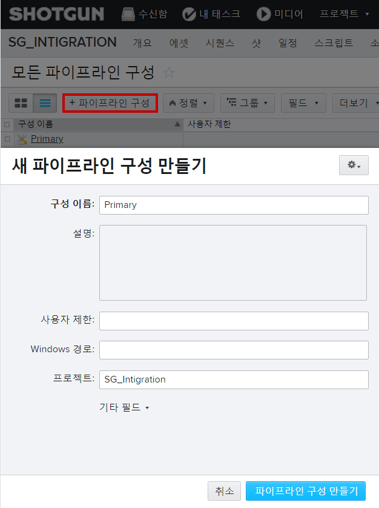
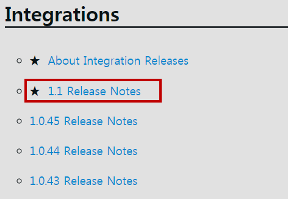
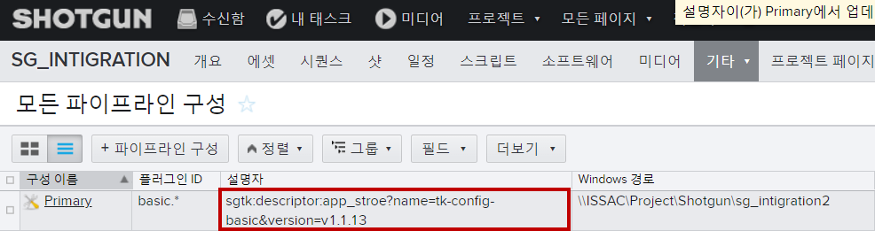
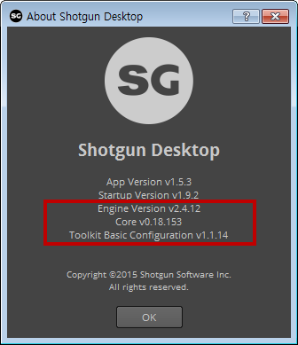

기초 구성 버전 잠그기
Locking the basic config version
Let's begin by locking more of these versions down. 먼저 이 버전들 중 더 많은 버전을 잠그는 것으로 시작하겠습니다.
It makes sense to start at the bottom of the list here. 여기 목록의 맨 아래에서 시작하는 것이 좋습니다.

We can see that a specific version of the toolkit basic configuration is being used. 툴킷 기본 구성의 특정 버전이 사용되고 있음을 알 수 있다.
And here it is on disk in the App Store's bundle cache folder.
App Store의 번들 캐시 폴더에 있는 디스크에 있습니다.
C:\Program Files\Shotgun\Resources\Python\bundle_cache\app_store\tk-config-basic\v1.1.12
Incidentally you can see that its github repo name is TK can fakebasic. 덧붙여 당신은 그것의 github repo 이름이 TK인지 fakebasic 할 수 있음을 볼 수 있습니다.
Now if the fine folks here at shotgun software release a new version of TK config basic it will be automatically downloaded to this location. 이제 여기 샷건 소프트웨어에 있는 사람들이 새로운 버전의 TK 구성을 출시하면 이 곳에 자동으로 다운로드 될 것입니다.
And shotgun desktop will consult it to determine which versions of the engine and core to use next time desktop is launched. 그리고 샷건 데스크톱은 다음 번에 데스크톱을 시작할 때 사용할 엔진과 코어의 버전을 결정하기 위해 이 데스크탑과 상의합니다.
So it logically follows that if you lock down the basic configuration the core and engine versions will also be locked down. 따라서 기본 구성을 잠그면 코어 및 엔진 버전도 잠깁니다.

Three birds with one stone great. 일석이조 입니다.
So how do we tell a shotgun desktop to lock down to a specific version of TK config basic. 샷건 데스크톱에서 특정 버전의 TK 구성 기본 버전으로 잠그도록 지시하는 방법은 무엇입니까?
Let's head over to shotgun. 샷건으로 갑니다.
If you don't already have an all pipeline configurations page create one now. 아직 모든 파이프라인 구성 페이지가 없으면 지금 페이지를 만듭니다.


Next create a new pipeline configuration called primary and make sure the project field is empty. 그런 다음 Primary라고 하는 새 파이프라인 구성을 생성하고 프로젝트 필드가 비어 있는지 확인합니다.

Next set the plug-in IDs field to basic dot star.
And set the descriptor field to the following string. 그런 다음 플러그인 ID 필드를 기본 도트 별으로 설정합니다.
Basic star tells toolkit to use this configuration for all quote basic plugins.
basic.*는 툴킷에 모든 견적 기본 플러그인에 대해 이 구성을 사용하도록 지시합니다.

If you wanted to target the nuke engine plug-in specifically for example you type basic nuke. 예를 들어, 특정 대상 엔진 플러그인을 지정하려면 기본 nuke를 입력합니다.
Everything shotgun software ships as of March 2018 is a basic plug-in but you might write your own engine plugins and choose to namespace them differently. 2018년 3월 현재 샷건 소프트웨어가 출하하는 모든 것은 기본 플러그인이지만 엔진 플러그인의 이름을 직접 작성하여 이름을 다르게 지정할 수도 있습니다.
For example if you wanted to target a custom in-house DCC called the game maker in a studio called cat fire one of your plugin IDs might be cat fire game maker. 예를 들어 cat fire라는 스튜디오에서 게임 제조업체라고 하는 사용자 지정 내부 DCC를 대상으로 지정하려면 해당 플러그인 ID 중 하나가 cat fire 게임 제조업체일 수 있습니다. 예를 들어 회사에 켓파이어라고 불리는 게임 메이커라는 커스텀 인하우스툴을 목표로 한다면
Here's a doc if you want more info. 더 많은 정보를 원하시면 여기 문서가 있습니다. http://developer.shotgunsoftware.com/tk-core/initializing.html#plugins-and-plugin-ids
Okay. So what have we done absolutely nothing actually or instructing shotgun desktop to do exactly what it's already doing to always check for.
And download the latest version of TK config basic from the App Store to instead lock the config down to a specific version we first need to know what version we want to lock.
It to to best determine that visit the integrations release notes page. 통합 릴리즈 노트 페이지를 방문하는 것이 최선입니다.
When you first visit this page take a moment to click follow new articles so you'll be notified when new versions of configurations are released. 이 페이지를 처음 방문하면 새 문서를 클릭하여 새 구성 버전이 출시되면 알림을 받게 됩니다.
After that click on the major release you're interested in. 그런 다음 관심 있는 주요 릴리즈를 클릭하십시오. https://support.shotgunsoftware.com/hc/en-us/sections/115000020494-Integrations
Next scroll around to discover info about the most recent version release. 그런 다음 스크롤하여 최신 버전 릴리스에 대한 정보를 검색합니다.
Great. So it looks like this here is the most recent version. 좋습니다. 여기 보시는 것이 가장 최신 버전인 것 같습니다.

I'll drop that into our descriptor field in shotgun and relaunch shotgun desktop.
이를 샷건의 descriptor(설명자) 필드에 넣고 샷건 데스크톱을 다시 시작할 것입니다.

Cool. We've successfully locked the basic config and thus the engine and core versions. 좋습니다. 기본 구성을 성공적으로 잠궈 엔진과 코어 버전을 만들었습니다.

Now you can sit back relax and know that your Studios shotgun related tools aren't going to randomly explode for your whole site. Good job. 이제 편히 앉아서 스튜디오와 관련된 도구가 전체 사이트에 대해 무작위로 폭발하지 않는다는 것을 알 수 있습니다.
We're done so if you follow all my recommendations you'll take responsibility for distributing a single version of the desktop installer to artists computers. 모든 권장 사항을 따르는 경우 데스크톱 설치 프로그램의 단일 버전을 아티스트 컴퓨터에 배포해야 할 책임이 있습니다.
You'll lock down your site's basic config and that's the engine and core versions but let your startup version auto update. 사이트의 기본 구성을 잠그고, 엔진과 코어 버전이지만 시작 버전이 자동으로 업데이트됩니다.
That all might have seemed long-winded and a lot to learn but there's a huge payoff great. 이 모든 것이 배울 것이 많은 것처럼 보였을 수도 있지만 엄청난 보상이 있습니다.